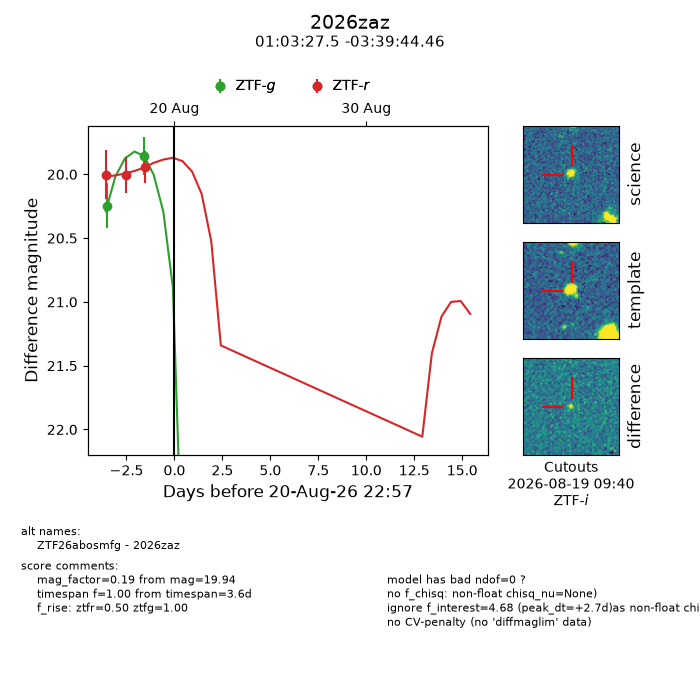
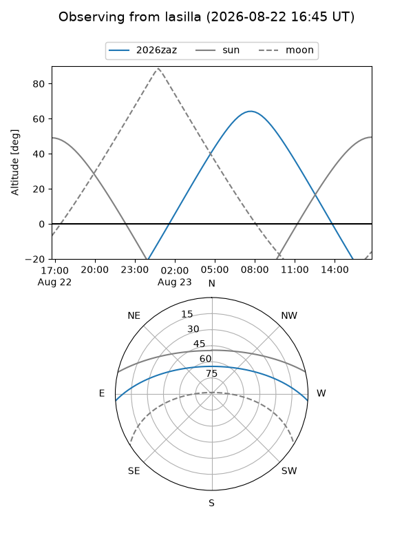
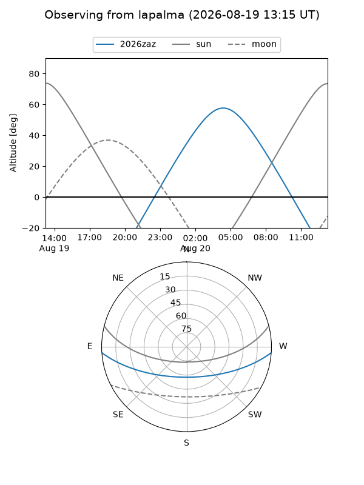
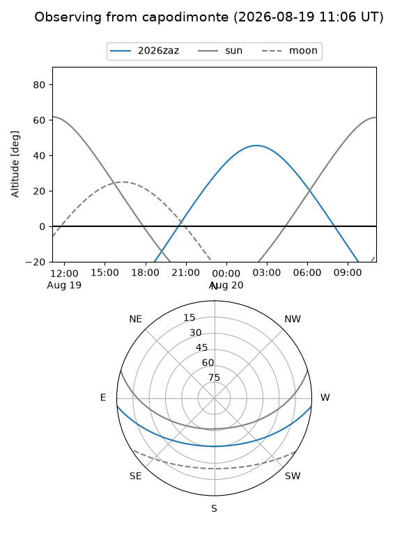
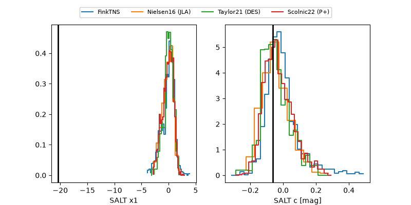

2026zaz
Target 2026zaz at 2026-08-20 23:00
Aliases and brokers:
FINK-ZTF: ztf.fink-portal.org/ZTF26abosmfg
Lasair-ZTF: lasair-ztf.lsst.ac.uk/objects/ZTF26abosmfg
ALeRCE-ZTF: alerce.online/object/ZTF26abosmfg
YSE-PZ: ziggy.ucolick.org/yse/transient_detail/2026zaz
TNS name: wis-tns.org/object/2026zaz
Direct TNS query: direct search
alt names
ZTF26abosmfg (ztf,fink_ztf)
2026zaz (tns,yse)
Coordinates:
equatorial (ra, dec) = 15.8644,-3.66235
equatorial (HMS+DMS) = 01:03:27.45,-03:39:44.46
galactic (l, b) = (130.4280,-66.35900)
Flags:
TNS type: nan
peak dt: +2.7
Photometry:
last ztfg=19.86, ztfr=19.94
2 ztfg, 3 ztfr detections
Lightcurve

Visibility



Additional plots
